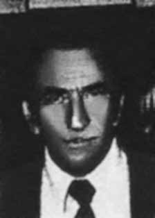

Israel
Tavares
Roque
CIRCUNSTÂNCIAS DA MORTE
Israel Tavares Roque desapareceu no dia 15 de novembro de 1964, quando foi detido por um policial do estado da Bahia em frente à estação ferroviária Central do Brasil, no Rio de Janeiro.
Ele e seu irmão estavam diante da estação, quando Israel avistou o mesmo policial que o prendera ainda em Salvador. Tentaram apressar os passos, com o objetivo de despistar o policial, mas este e outros quatro agentes conseguiram alcançá- los. Seu irmão, Peres, que o acompanhava, tentou impedir que Israel fosse preso, mas não conseguiu. Israel foi colocado em uma viatura policial e, em seguida, levado para local desconhecido.
Peres o procurou em diferentes delegacias tanto no Rio de Janeiro quanto em Salvador, mas não o encontrou. Documentos localizados no Arquivo Público do Rio de Janeiro, referentes ao Departamento de Ordem Política e Social (DOPS), comprovam que Israel era perseguido e vigiado por sua atuação política no PCB. Depoimentos de diferentes pessoas, entre elas a professora da Universidade Federal da Bahia, Sônia de Alencar Serra, comprovam a militância de Israel no PCB depois de 1953.
Diligências feitas pela CEMDP conseguiram novas informações sobre as circunstâncias do desaparecimento de Israel a partir da atuação de Alba Regina Ignácio de Oliveira, amiga de Peres. Segundo ela, seu colega de trabalho no Ministério da Educação (MEC), Sebastião Viana, procurou um militar ligado à repressão política para ter notícias de Israel. Com esta informação, Alba conseguiu localizar Clovis Rocha Mendes, já reformado da Marinha.
Clovis disse que, atendendo ao pedido de Sebastião, procurou o comandante Clemente José Monteiro Filho, que lhe comunicou que o nome de Israel não constava da lista de presos que estavam sob custódia da Marinha, Exército ou Aeronáutica. Contudo, a informação mais próxima a respeito do paradeiro do militante foi o comunicado da polícia da Bahia aos órgãos de segurança no Rio de Janeiro, afirmando que iria realizar uma operação naquela cidade para prender Israel. Até a presente data, Israel Tavares Roque permanece desaparecido.
Israel Tavares Roque disappeared on November 15, 1964, when he was detained by a police officer from the state of Bahia in front of the Central do Brasil railway station, in Rio de Janeiro.
He and his brother were in front of the station when Israel saw the same police officer who had arrested him in Salvador. They tried to speed up their steps, with the aim of losing the police officer, but he and four other officers managed to catch up to them. His brother, Peres, who accompanied him, tried to prevent Israel from being arrested, but failed. Israel was placed in a police vehicle and then taken to an unknown location.
Peres looked for him at different police stations in both Rio de Janeiro and Salvador, but couldn't find him. Documents located in the Public Archives of Rio de Janeiro, referring to the Department of Political and Social Order (DOPS), prove that Israel was persecuted and monitored for its political activities in the PCB. Testimonies from different people, including the professor at the Federal University of Bahia, Sônia de Alencar Serra, prove Israel's militancy in the PCB after 1953.
Investigations carried out by CEMDP obtained new information about the circumstances of Israel's disappearance through the actions of Alba Regina Ignácio de Oliveira, a friend of Peres. According to her, her co-worker at the Ministry of Education (MEC), Sebastião Viana, sought out a military officer linked to political repression to get news about Israel. With this information, Alba managed to locate Clovis Rocha Mendes, now retired from the Navy.
Clovis said that, in response to Sebastião's request, he sought out Commander Clemente José Monteiro Filho, who informed him that Israel's name was not on the list of prisoners who were in the custody of the Navy, Army or Air Force. However, the closest information regarding the militant's whereabouts was the statement from the Bahia police to security agencies in Rio de Janeiro, stating that they would carry out an operation in that city to arrest Israel. To date, Israel Tavares Roque remains missing.
Israel Tavares Roque desapareció el 15 de noviembre de 1964, cuando fue detenido por un policía del estado de Bahía frente a la estación de ferrocarril Central do Brasil, en Río de Janeiro.
Él y su hermano estaban frente a la comisaría cuando Israel vio al mismo policía que lo había arrestado en Salvador. Intentaron acelerar el paso, con el objetivo de perder al policía, pero éste y otros cuatro agentes lograron alcanzarlos. Su hermano Peres, que lo acompañaba, intentó impedir que arrestaran a Israel, pero fracasó. Israel fue metido en un vehículo policial y luego llevado a un lugar desconocido.
Peres lo buscó en diferentes comisarías tanto de Río de Janeiro como de Salvador, pero no pudo encontrarlo. Documentos ubicados en el Archivo Público de Río de Janeiro, referidos al Departamento de Orden Político y Social (DOPS), prueban que Israel fue perseguido y monitoreado por sus actividades políticas en el PCB. Testimonios de diferentes personas, entre ellas la profesora de la Universidad Federal de Bahía, Sônia de Alencar Serra, prueban la militancia de Israel en el PCB después de 1953.
Las investigaciones realizadas por el CEMDP obtuvieron nueva información sobre las circunstancias de la desaparición de Israel a través de las acciones de Alba Regina Ignácio de Oliveira, amiga de Peres. Según ella, su compañero de trabajo en el Ministerio de Educación (MEC), Sebastião Viana, buscó a un militar vinculado a la represión política para obtener noticias sobre Israel. Con esta información, Alba logró localizar a Clovis Rocha Mendes, hoy retirado de la Marina.
Clovis dijo que, en respuesta al pedido de Sebastião, buscó al comandante Clemente José Monteiro Filho, quien le informó que el nombre de Israel no estaba en la lista de prisioneros que estaban bajo custodia de la Marina, el Ejército o la Fuerza Aérea. Sin embargo, la información más cercana sobre el paradero del militante fue el comunicado de la policía de Bahía a los organismos de seguridad de Río de Janeiro, indicando que realizarían un operativo en esa ciudad para arrestar a Israel. A la fecha, Israel Tavares Roque continúa desaparecido.